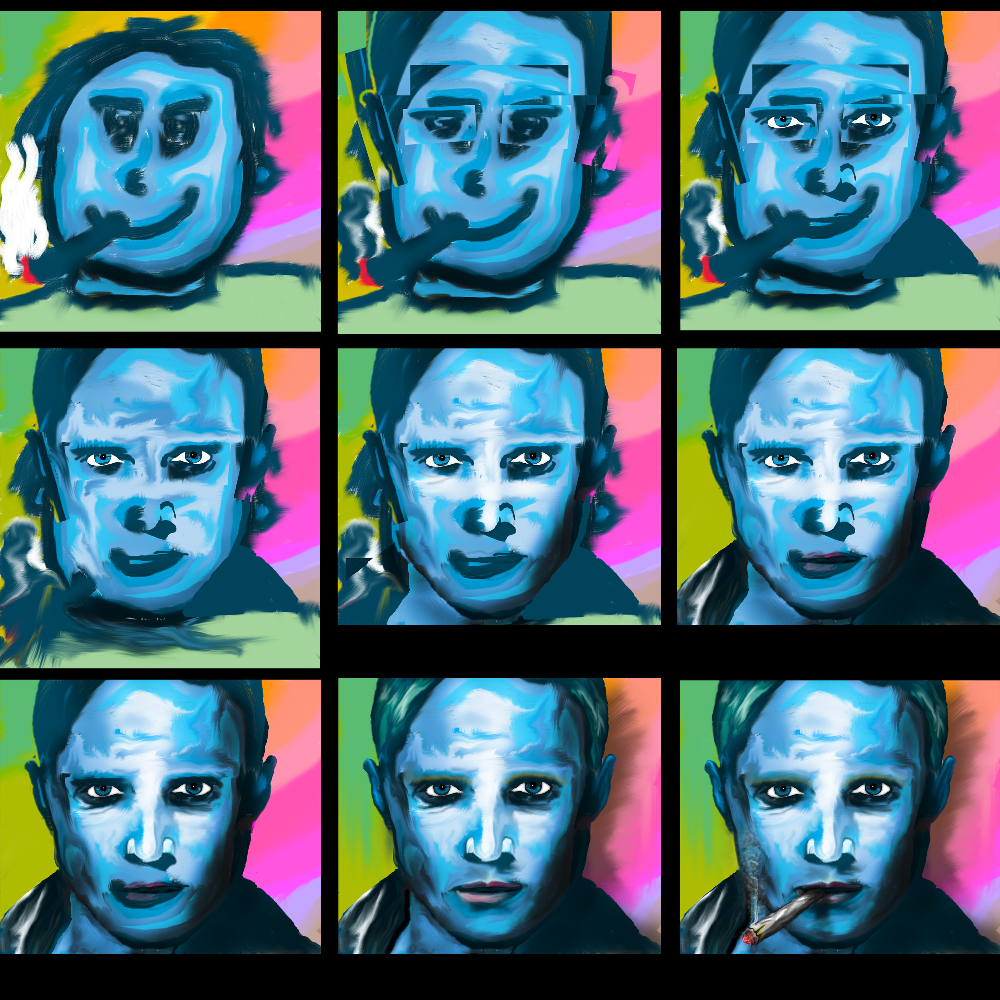
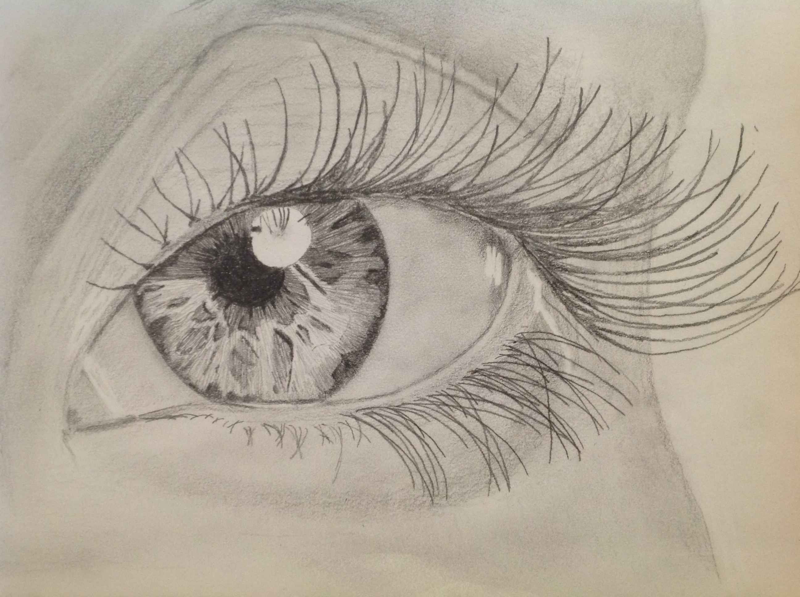

Media
This page showcases some of my videos and images. Most of it is creative work, but some is related to my simulations and other physics related work.
Conflict
This is a game I started working on during the small amount of spare time I had during the last year of my PhD. As it got closer to the thesis submission date, and I was spending almost every waking hour refining my writing and performing any additional simulations that needed to be done, I had to abandon it. I would still love to complete this one day if I have the time.
The genre is intended to be danmaku (bullet hell), although given that there is only one level complete at the moment, that might not be obvious. I also ran into performance problems with the large number of projectiles, which are apparent as stuttering in the demo video, and I need to solve those issues before working on the more intense later levels. Given that a typical danmaku game has five or six basic levels (which are usually repeated at a higher difficulty after completing the first playthrough), it would not be a monumental task to finish this game. I also have all the music written for each level.
Here is some gameplay of the completed first level (the first 3:18), as well as some bits and pieces:
ShaderToy Simulations
Here are a couple of physical simulations I programmed in GLSL. The first one is a simulation of an orbital system that I was using to try to work out how to achieve occlusion, perspective, and diffuse lighting. The second is a simulation of Young's double-slit experiment.
Octahedral Particle
This is a render of the simulated particle that was was used for the work published in my first paper. The particle was created by lining up edges and faces of a 3D model with those of two tomograms (red and blue point-clouds). For more details, please read the paper.
Digital Drawings
These are some drawings I have created using Adobe Photoshop or other image editing software such as Manga Studio.
Hans
This was an exercise in drawing a cartoony face, and editing and tidying it up to achieve some level of sophistication. I was very pleased with the result here. The first image is the finished work, and the second is some steps in the progression from start to finish.

Portraits
These are just random portraits that I drew. The first one is roughly based on a photograph. There is some skin from the photograph blended in to add some wrinkles. The second one is also based on a photograph. I was aiming for realism here, and although there are plenty of areas for improvement, I'm certainly happy with the result.


Sketches
Some pencil/charcoal sketches, drawn from photographs, all on sketch paper. Left: Timothy Dalton—charcoal; Right: Erwin Schrödinger—pencil; Bottom: Eye—pencil.
